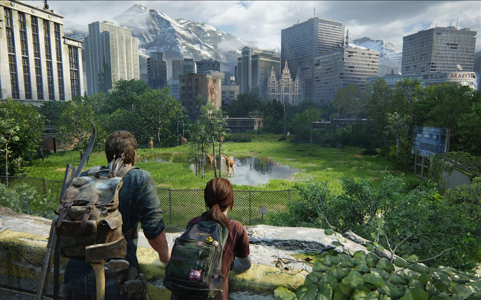

World 13 / Reclaimed places
The Last of Us Part I
The stillness of abandoned rooms, green growth, and light finding its way back in.

World 13 / Reclaimed places
The stillness of abandoned rooms, green growth, and light finding its way back in.